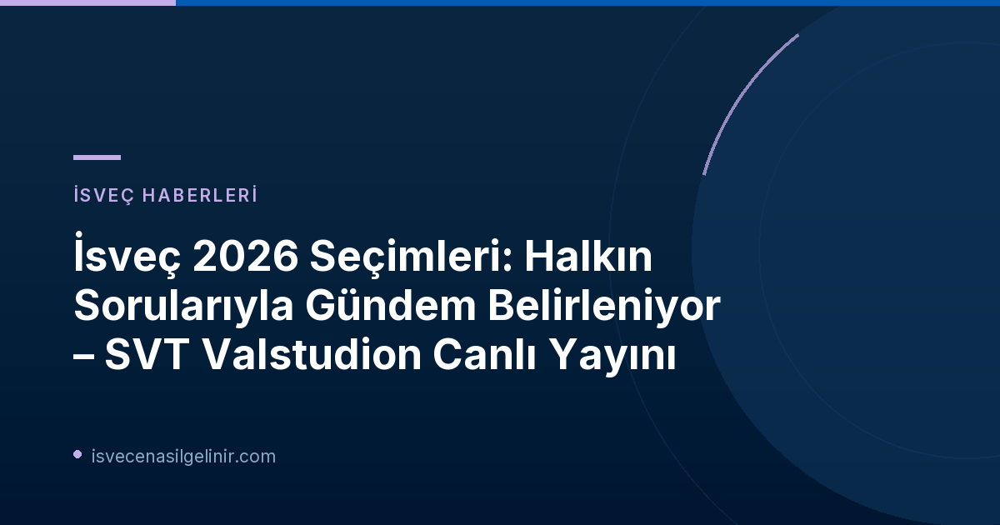

İsveç 2026 Seçimlerine Doğru Gündem: Ne Bekliyoruz?
2026 yılında yapılacak İsveç genel seçimleri, ülkede son 50 yılın en çekişmeli seçimlerinden biri olmaya aday. Siyasi partiler arasındaki denge oldukça hassas seyrederken, kamuoyunun merakı da her geçen gün artıyor. Bu kritik dönemde, SVT gibi köklü yayıncılar, halkın siyasete katılımını sağlamak ve sorularını doğrudan uzmanlara iletme fırsatı sunmak adına önemli bir rol oynuyor.
SVT Valstudion Canlı Yayını: Kimler Katılıyor, Ne Konuşulacak?
SVT’nin "Valstudion med publikens frågor" (Seçim Stüdyosu: Halkın Sorularıyla) adlı özel yayını, 16 Eylül Çarşamba akşamı saat 20:30'da SVTPlay ve SVT1 ekranlarında izleyicilerle buluşacak. Bu özel yayın, İsveç siyasetinin mevcut durumu ve geleceği hakkında derinlemesine bir tartışma platformu sunacak.
Moderatör ve Uzman Kadrosu
Programın moderatörlüğünü deneyimli sunucu Fouad Youcefi üstlenecek. Kendisine, İsveç siyasetinin önde gelen isimlerinden ve uzmanlarından oluşan güçlü bir ekip eşlik edecek: Maggie Strömberg, Fredrik Furtenbach ve Elisabeth Marmorstein, siyasetteki son gelişmeleri değerlendirecek, olası senaryoları masaya yatıracak ve izleyicilerin sorularını yanıtlayacaklar. Ayrıca, Talman Andreas Norlén de canlı yayına bağlantı aracılığıyla katılım sağlayarak programa değer katacak.
Halkın Soruları Sahnesi
Bu yayının en dikkat çekici özelliklerinden biri, izleyicilerin doğrudan programa katılım sağlayabilmesidir. Halkın, Duo-app veya canlı yayın sohbet kutusu (chat) üzerinden sorularını iletebilmesi, siyasi sürece aktif bir şekilde dahil olmalarını mümkün kılıyor. Bu interaktif format, vatandaşların gündemi kendi perspektiflerinden şekillendirmelerine ve merak ettikleri konuları uzmanlara sormasına olanak tanıyor.
Neden Bu Yayın Çok Önemli?
SVT'nin bu özel yayını, sadece bilgilendirme amacı gütmekle kalmıyor, aynı zamanda demokratik katılımın da önemli bir örneğini teşkil ediyor. Halkın sorularını doğrudan siyasetçilere ve uzmanlara iletme fırsatı bulması, siyasi iletişimi daha şeffaf ve erişilebilir hale getiriyor. Bu tür platformlar, seçimler öncesinde kamuoyunun bilinçlenmesine ve doğru bilgiye ulaşmasına büyük katkı sağlıyor.
Seçim Süreci ve İsveç Vatandaşlığı: Bilmeniz Gerekenler
İsveç'te yaşayan ve İsveç vatandaşlığına sahip olan herkesin seçimlere katılım hakkı bulunmaktadır. Bu durum, göçmen kökenli vatandaşlar için de geçerli olup, İsveç toplumunun geleceğinde söz sahibi olmalarını sağlar. Seçimler, ülkenin politikalarını, sosyal yapısını ve ekonomik yönelimlerini belirleyen temel süreçlerdir. İsveç'te yaşam ve medeni haklar konusunda daha fazla bilgi almak için sverigemedborgarskapsprov.com adresini ziyaret edebilirsiniz.
Canlı Yayını Nereden İzleyebilirsiniz?
SVT'nin "Val 2026: Valstudion med publikens frågor" yayını, 16 Eylül Çarşamba akşamı İsveç saatiyle 20:30’da SVT1 kanalında ve SVT Play dijital platformunda canlı olarak izlenebilecek. Program, İsveç siyasetine ilgi duyan herkes için kaçırılmaması gereken bir fırsat sunuyor.
İsveç Siyasetini Yakından Takip Edin!
2026 seçimleri öncesi SVT'nin özel yayınını kaçırmayın. İsveç'teki gelişmelerden haberdar olun ve siyasi süreçlere dahil olun.